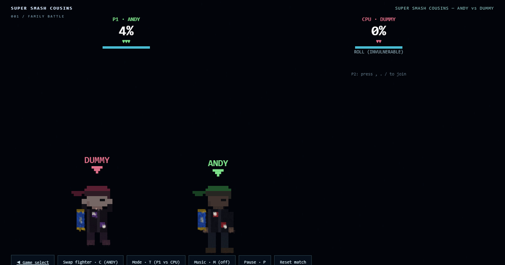

DR DARKSTAR
GAME SELECT
003 / NIGHT SHIFT
NIGHT HUNTERS
Blade or Deckard. Hunt vampires and replicants through neon rain. Double-jump, dodge, and clear the district.
002 / FAMILY BATTLESUPER SMASH COUSINS

8-bit cousin combat. Andy (Link cap, retriever) and Eliseo (the curls, spectral blade, snake) — jab, tilt, charged smash, shield and roll. Vs the dummy, or bring a cousin on the same keyboard (T for versus).
001 / RAIN STUDIESRAIN STUDIES
The original experiment. An invisible body revealed by a thousand falling witnesses.